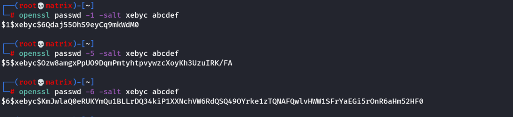
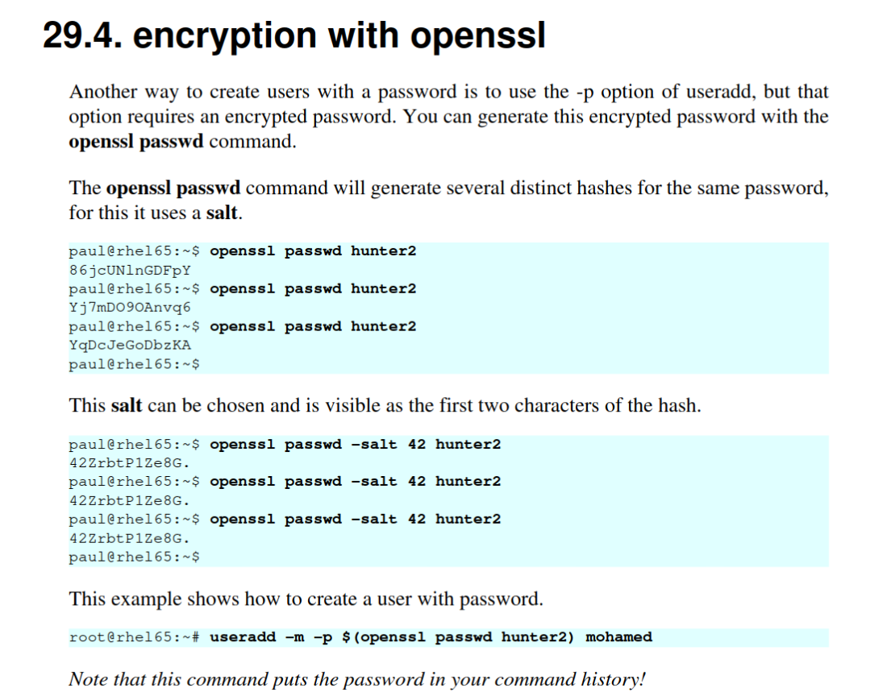
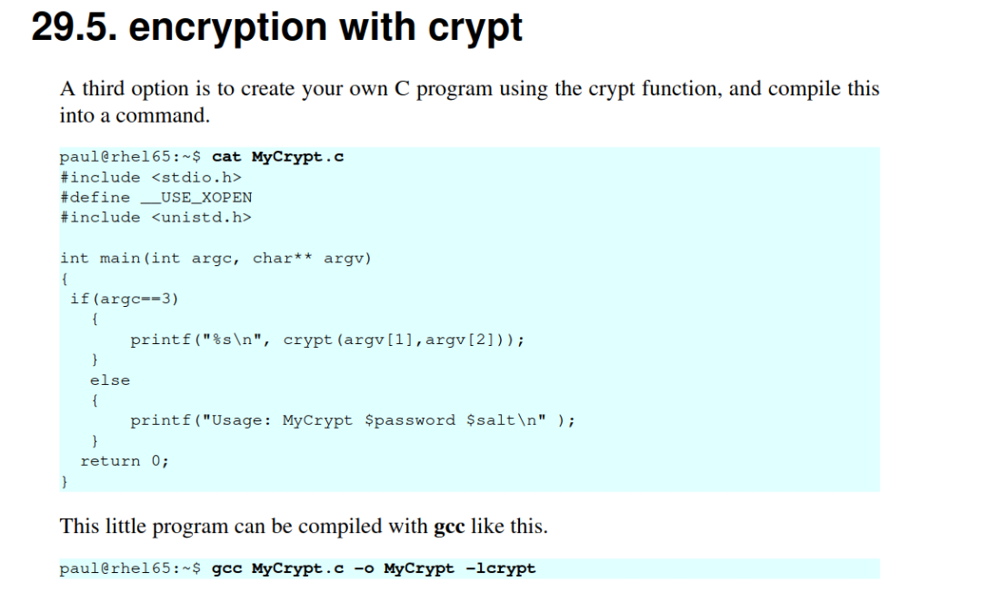
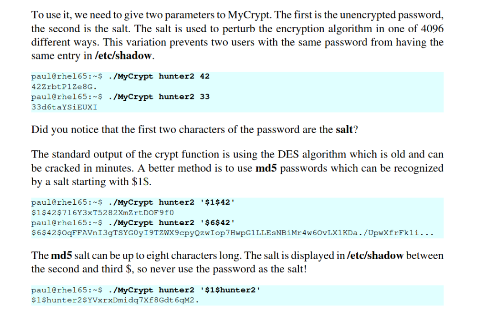

openssl
Used for creating a linux password to be added to /etc/passwd file
openssl passwd -6 -salt xebyc my_password
Note: The number -6 represents hash algorithm
-1 : MD5
-5 : SHA-256
-6 : SHA-512 (Used by default in Linux Passwords)

Book Note

Using Custom C Program to create Password

To use it check the following:
